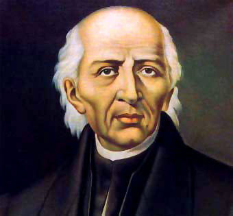
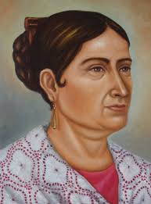
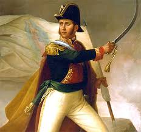
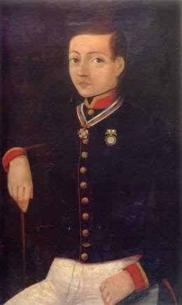
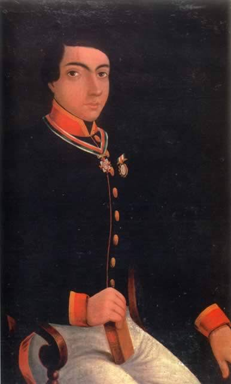
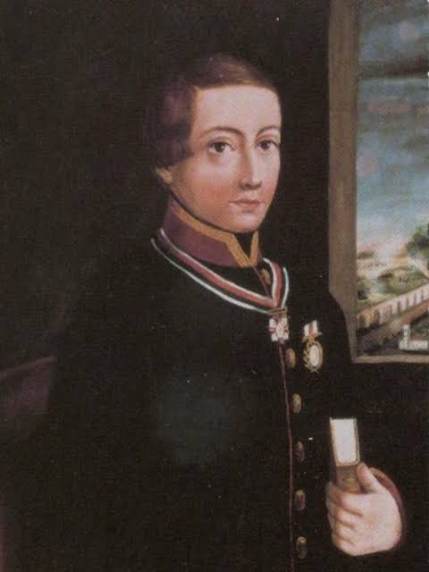
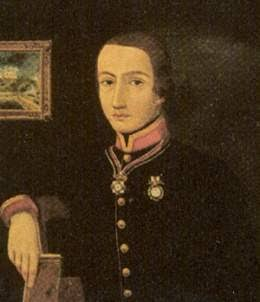
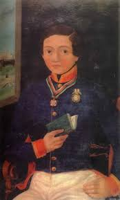
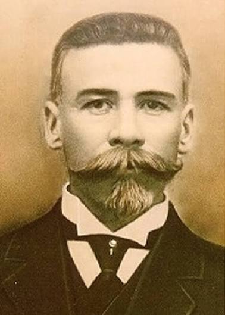
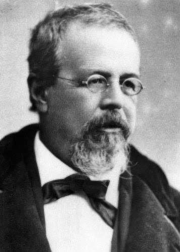

PERSONAJES QUE FORJARON LA INDEPENDENCIA:
(15 y 16 de septiembre)
Sacerdote y militar erudito, formado en el Colegio de San Nicolás. Dominaba lenguas indígenas como náhuatl y otomí, además de francés. Tras el Grito de Dolores, abolió la esclavitud en México mediante un decreto emitido en Guadalajara en diciembre de 1810. Fue capturado y fusilado en Chihuahua en 1811. Considerado el "Padre de la Patria", inició la gesta independentista la madrugada del 16 de septiembre de 1810 con el famoso Grito de Dolores.

Esposa del corregidor de Querétaro, Miguel Domínguez. Facilitó su hogar para las reuniones clandestinas organizadas bajo la fachada de tertulias literarias. Al ser descubierta la conspiración, logró enviar un mensaje al capitán Ignacio Allende, lo que precipitó el inicio de la contienda.

Exalumno de Hidalgo, asumió el liderazgo del movimiento tras la muerte de este. Destacó por su estrategia militar en el sur del país y por convocar el Congreso de Anáhuac en 1813, donde presentó los Sentimientos de la Nación, sentando las bases del México republicano e independiente.

Capitán del regimiento de Dragones de la Reina. Aportó la formación militar estratégica en los inicios del movimiento. Tuvo importantes diferencias tácticas con Hidalgo respecto al control de las tropas. Fue capturado en Acatita de Baján y ejecutado junto a los primeros caudillos.

BATALLA DE CHAPULTEPEC
(13 de septiembre de 1847):
Los Niños Héroes: Cadetes del Colegio Militar que hicieron frente a la invasión estadounidense encabezada por el general Winfield Scott
Con 19 años, era el mayor del grupo y contaba con el grado de teniente de ingenieros. Diseñó y construyó las fortificaciones y trincheras en la base del cerro. Murió combatiendo en el hornabeque defensivo antes de que los invasores alcanzaran la cima.

Nacido en Tepic, Nayarit, tenía 20 años al momento de la batalla y pertenecía al Batallón de San Blas. Su cuerpo fue hallado en las laderas del cerro. La historiografía militar y la tradición popular le atribuyen la acción de envolverse en el pabellón nacional para defenderlo del enemigo.

Originario de Chihuahua, contaba con 18 años. Tras ser dado de baja del Colegio Militar, solicitó su reingreso ante la amenaza invasora. Defendió el acceso a la sala de banderas dentro del Castillo, donde combatió cuerpo a cuerpo hasta caer gravemente herido; falleció al día siguiente por la gravedad de sus lesiones.

Nacido en Puebla, tenía apenas 14 años. Desempeñaba la labor de centinela en la guardia del edificio. Al escuchar el avance enemigo, dio el grito de alarma y enfrentó con su fusil a los soldados estadounidenses, siendo abatido en el puesto de guardia.

Originario del Estado de México, tenía 18 años. Durante el asalto, intentó retirarse hacia el interior del edificio para reunirse con sus compañeros, pero fue emboscado por las tropas enemigas en el sector norte de la cima.

Nacido en Guadalajara, Jalisco, era el más joven de todos con solo 13 años. Su cuerpo fue encontrado junto al de otros defensores cerca del área de la cantera, tras negarse a rendirse ante la avanzada enemiga.

OTRAS FIGURAS HOMENAJEADAS:
Médico y político chiapaneco. El 23 y 25 de septiembre de 1913 redactó sus célebres discursos parlamentarios denunciando los crímenes de Victoriano Huerta. Sus palabras provocaron su asesinato en octubre de ese mismo año, convirtiéndose en un símbolo de la libertad de expresión y la democracia en México.

Poeta, periodista y ministro de Hacienda durante el gobierno de Benito Juárez. Su intervención en Guadalajara en 1858 detuvo la ejecución de Juárez interponiéndose ante los fusiles. Además, fue un cronista clave del México del siglo XIX.
